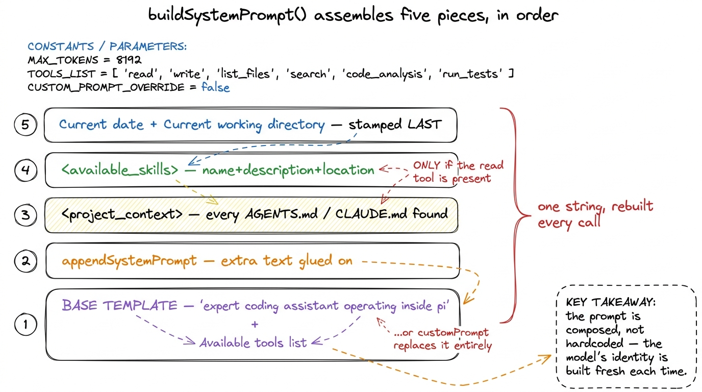
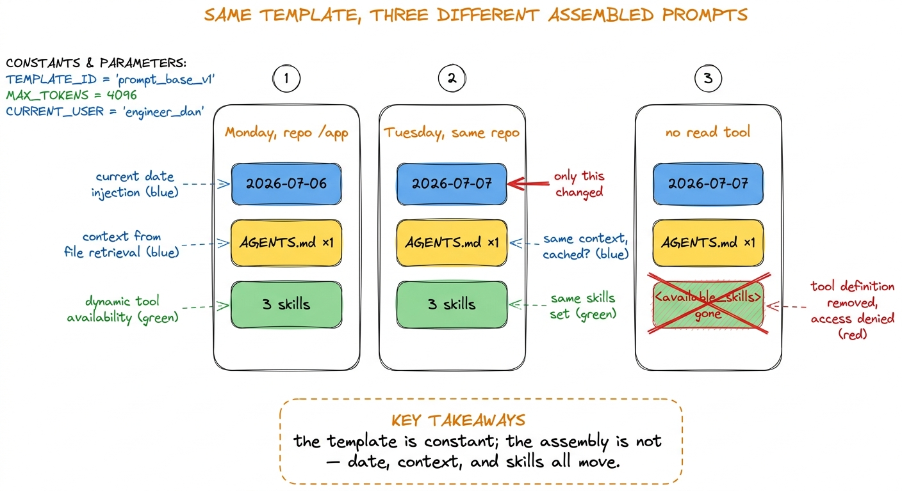
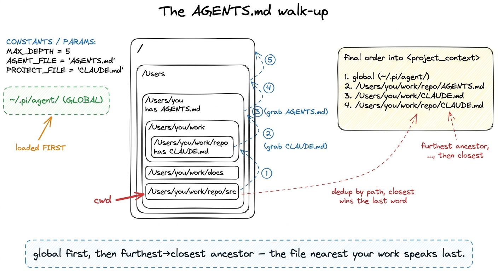
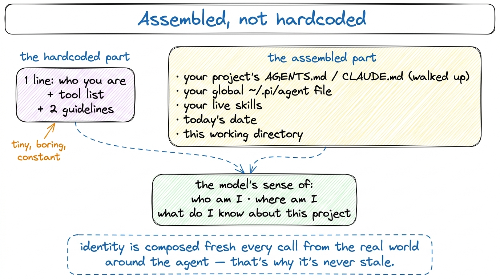

The system prompt: how Pi tells the model who it is BUILD
By now Pi can call the model, run tools, and keep a conversation alive across many laps. But there is a question we have quietly dodged the whole time: on that very first call, before the user has typed anything, what does the model know about itself? It has never met Pi. It doesn't know it lives in a coding agent, doesn't know today's date, doesn't know which directory it's sitting in, and has never read a line of this project's conventions. Hand a blank-slate model a request and it will guess at all of that — and guess wrong. The system prompt is where Pi stops the guessing.
There is a myth to clear away first. People imagine the system prompt is one magic string — some carefully tuned paragraph that a lab spent months polishing, dropped in whole. Pi's core prompt is genuinely small, almost boring. But the prompt the model actually receives is not that string. It is assembled, fresh, on every call, out of five stacked pieces — and most of what makes it useful comes from the pieces Pi discovers about your machine and your project, not from the template at all.
One function, five pieces, in order
The whole assembly lives in one function: buildSystemPrompt() in packages/coding-agent/src/core/system-prompt.ts. It takes an options bag — cwd, the selected tools, pre-loaded contextFiles, pre-loaded skills, an optional appendSystemPrompt, an optional customPrompt — and returns a single string. Read it as a stack being built bottom-up, five layers, always in this order.

figure rendering · The five pieces buildSystemPrompt stacks in order: base template, appeLet me walk the five in the order the code writes them.
Piece 1 — the base template (or a replacement). If the caller passes a customPrompt, Pi uses that verbatim and skips the template entirely.1 This is the escape hatch: an extension or SDK embedder can throw away Pi's identity text and supply its own. Everything after piece 1 — context, skills, date — still gets appended on top, so even a custom prompt gets Pi's project awareness for free. Otherwise it uses the built-in template, which opens with a single sentence of identity:
You are an expert coding assistant operating inside pi, a coding agent harness.
You help users by reading files, executing commands, editing code, and writing new files.
Available tools:
- read: …
- bash: …
Guidelines:
- Be concise in your responses
- Show file paths clearly when working with filesThat is the "magic string," and notice how little of it there is. One line of who-you-are, a list of the tools that are actually turned on this session, and a couple of guidelines. There is nothing project-specific in it — because none of the project-specific stuff belongs in a static template. It is discovered.
The list of tools is not a fixed list
Look again at that Available tools: section. It is not hardcoded either. buildSystemPrompt receives selectedTools and toolSnippets, and a tool only appears in the prompt if the caller handed over a one-line snippet for it:
const tools = selectedTools || ["read", "bash", "edit", "write"];
const visibleTools = tools.filter((name) => !!toolSnippets?.[name]);So the prompt's self-description of its own hands changes with the session's actual toolset. Turn a tool off and its line vanishes; the model is never told about a capability it doesn't have.2 The same source of truth also drives the guidelines. buildSystemPrompt checks tools.includes("bash"), "grep", "find", "ls" and only then adds a bullet like "Use bash for file operations like ls, rg, find" — advice that would be nonsense if bash were disabled. This is the first hint of the theme: the prompt describes the world as it actually is this run, not a world imagined at build time. The full toolbox lives in Pi's toolbox; here it's enough to see that the prompt reads from it.
Piece 2 — appended text. If appendSystemPrompt is set, Pi glues it on with a blank line between. It's the "…and one more thing" slot — a place to bolt on policy without touching the template.
Piece 3 — <project_context>. Now the assembly stops describing Pi and starts describing you. If any context files were loaded, they go into an XML block:
prompt += "\n\n<project_context>\n\n";
prompt += "Project-specific instructions and guidelines:\n\n";
for (const { path, content } of contextFiles) {
prompt += `<project_instructions path="${path}">\n${content}\n</project_instructions>\n\n`;
}
prompt += "</project_context>\n";Each file is wrapped in its own <project_instructions> tag stamped with the real path it came from, so the model can see not just what the instruction is but where it lives. Where those files come from is the second half of this chapter.
Piece 4 — <available_skills>. Skills get their own block, appended by formatSkillsForPrompt(). It lists only each skill's <name>, <description>, and <location> — never the full body — so the model learns a skill exists without paying the tokens to load it, then reads the file on demand when a task matches. And there is a hard gate:
if (hasRead && skills.length > 0) {
prompt += formatSkillsForPrompt(skills);
}The skills block is added only if the read tool is present. That is not decoration — it is honesty. A skill's whole promise is "read my file later." If the model can't read, advertising the skill would be a lie, so Pi simply doesn't. The progressive-disclosure design behind this is the subject of Pi's extensibility.
Piece 5 — date and directory, stamped last. The very last thing appended, every single call:
prompt += `\nCurrent date: ${date}`;
prompt += `\nCurrent working directory: ${promptCwd}`;date is computed from new Date() at assembly time. This is why a Pi session started tomorrow knows it's tomorrow, and a session started in a different folder knows where it is — no reconfiguration, no restart. The two facts a base model can never know on its own get stamped in fresh, last, so they're always current.

figure rendering · The same template produces different prompts run to run: the date advaWhere <project_context> comes from: the walk-up
We said the project files are discovered. Here is the discovery, in loadProjectContextFiles() (packages/coding-agent/src/core/resource-loader.ts). At each directory Pi looks for four candidate filenames, in this order, and takes the first that exists:
const candidates = ["AGENTS.md", "AGENTS.MD", "CLAUDE.md", "CLAUDE.MD"];Then it gathers files from two sources. First, the global file — from the agent directory, ~/.pi/agent/. That's your personal, cross-project standing instructions, and it goes in first. Then it walks up. Starting at cwd, Pi checks the current directory, then its parent, then its parent, all the way to the filesystem root:
let currentDir = resolvedCwd;
while (true) {
const contextFile = loadContextFileFromDir(currentDir);
if (contextFile && !seenPaths.has(contextFile.path)) {
ancestorContextFiles.unshift(contextFile); // furthest ancestor ends up first
seenPaths.add(contextFile.path);
}
if (currentDir === root) break;
const parentDir = resolve(currentDir, "..");
if (parentDir === currentDir) break;
currentDir = parentDir;
}
figure rendering · Pi loads the global file first, then walks up from cwd to root collectTwo details in that loop earn their keep. The unshift means each ancestor found is pushed to the front of the list, so after the climb the ordering runs furthest ancestor → closest. And seenPaths dedups by path, so a file already loaded (say, the global one) is never counted twice. The final list is global-first, then furthest-to-closest — which means the file nearest your actual work is appended last, and gets the final word.3 Order matters because these are stacked instructions, not a merge. A monorepo-root AGENTS.md can set house style, and a package-level CLAUDE.md deeper down can refine or override it — and because closest-is-last, the more specific file is the one the model reads most recently. Pi doesn't resolve conflicts; it lets proximity do it.
And crucially, this is reloaded on each resource reload, not frozen at startup. Edit an AGENTS.md mid-session and Pi picks it up the next time it rebuilds — the same way the date re-stamps itself. The project context is a live view of your files, not a snapshot.
The one idea to take away
Step back and the pattern is unmistakable. A bare model arrives knowing nothing about its situation. Pi's answer is not to write a giant static prompt that tries to anticipate every project — that string would be stale the moment it shipped. Instead it keeps the hardcoded part deliberately tiny, and assembles the rest from what's true right now: which tools are on, which AGENTS.md files sit above your cwd, which skills you have, what today's date is, where you're standing.

figure rendering · Almost nothing about the model's sense of itself is hardcoded; it is cThat is the whole lesson of the system prompt in Pi: the model's sense of who am I, where am I, what do I know about this project is not a fixed string it was born with. It is built, in order, on every call, out of the world the agent currently finds itself in. Which raises the next question — that "world" keeps talking about files and a working directory and running commands, but whose filesystem, and whose shell? That is Pi's execution environment, where we pin down exactly what "here" means. For the wider tour of how these parts snap together, see how it all fits.